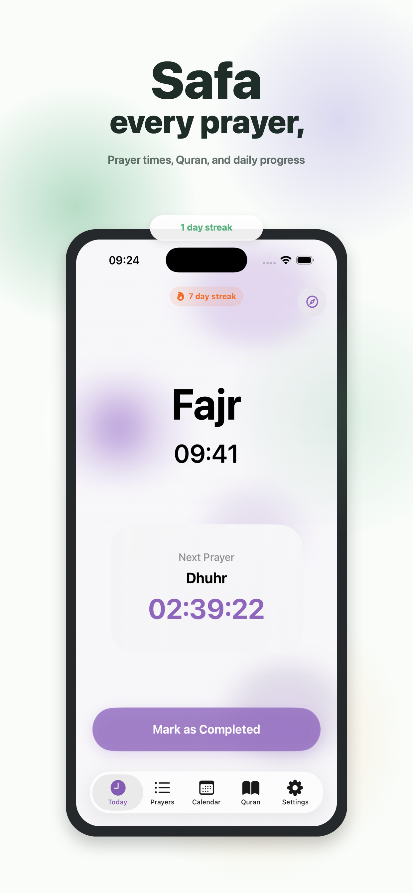
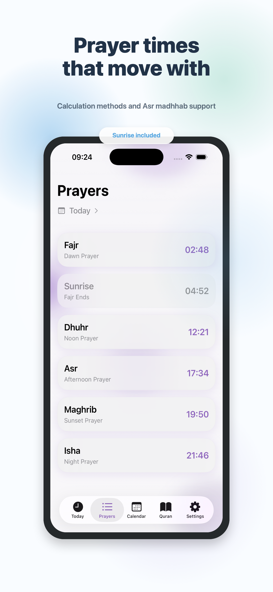
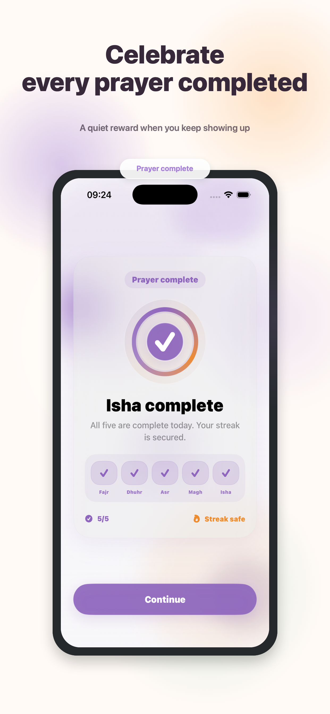
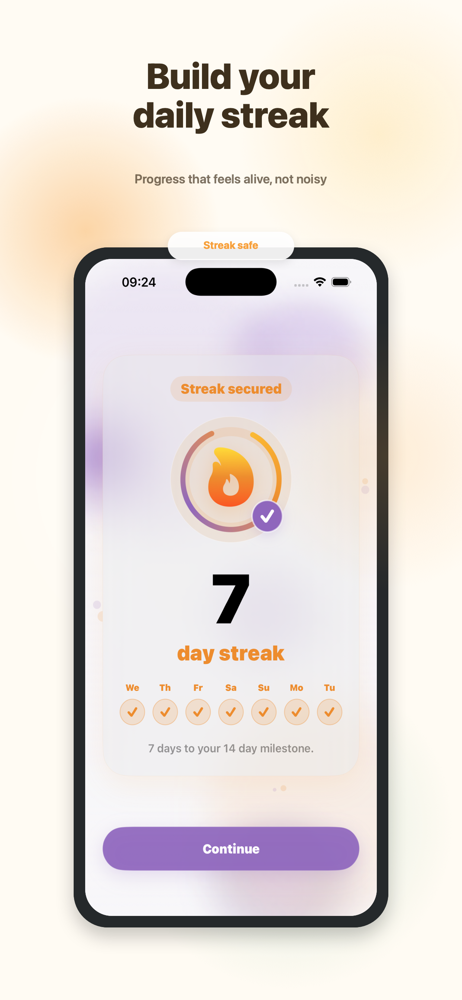
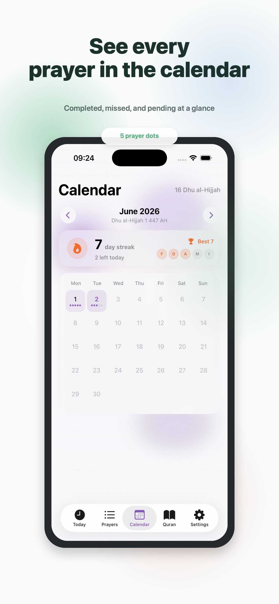
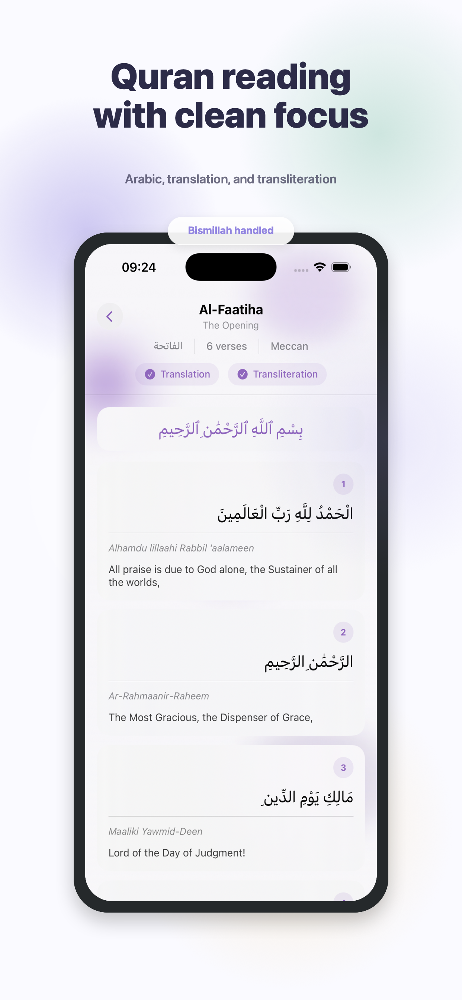
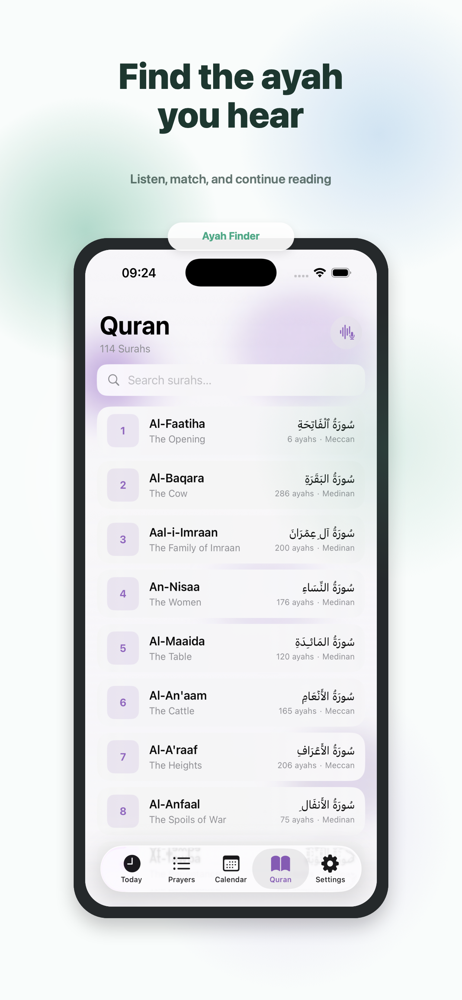
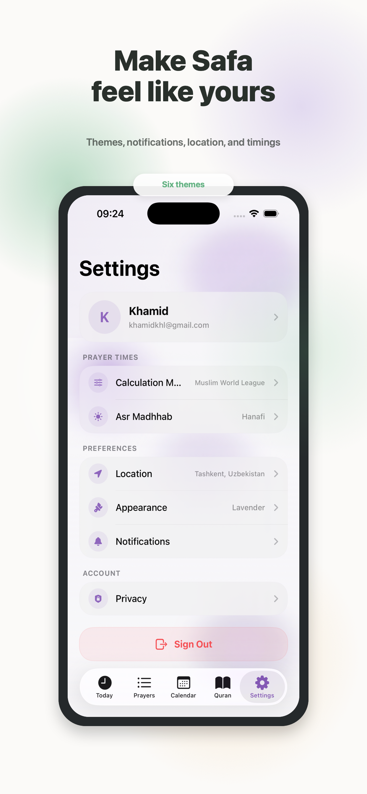

01
Accurate prayer times
Choose your calculation method, Asr madhhab, city, country, or current location. Safa includes Sunrise so Fajr ending is clear.
Prayer, Quran, progress
Safa brings accurate prayer times, Quran reading, ayah finding, Qibla direction, thoughtful reminders, and motivating streaks into one premium iPhone experience.
The app pairs clear prayer tools with small moments of motivation: completion animations, streak check-ins, soft backgrounds, and progress you can understand at a glance.








Choose your calculation method, Asr madhhab, city, country, or current location. Safa includes Sunrise so Fajr ending is clear.
Mark prayers completed or missed, review the last seven editable days, and keep a daily streak that celebrates full prayer days.
Read Quran with translation and transliteration, or use the ayah finder to identify recitation and jump into the right place.
Enable local prayer notifications with simple, motivating copy for each prayer. No remote push system is needed.
Safa asks what matters to you, then uses your profile and goal to shape a more human experience across devices.
Pick from six theme colors, adjust app appearance, and keep the interface soft, readable, and personal.